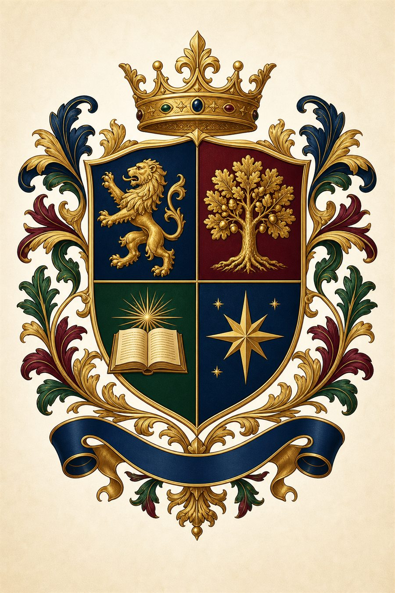

Промтзилла
Как сделать фамильный герб с помощью ИИ
Для герба фото до не требуется: нейросеть онлайн собирает итоговый знак по фамилии, девизу, семейным символам, цветам и стилю геральдики.
Пошаговая инструкция
- 1Запиши фамилию, девиз и 3-5 символов, которые связаны с семьёй.
- 2Выбери стиль: классический, дворянский, минималистичный, книжная гравюра или современная эмблема.
- 3Укажи цвета герба и элементы: щит, лента, корона, ветви, животные, инструменты или монограмма.
- 4Попроси ИИ сделать цельную композицию без случайных букв и нечитаемого текста.
- 5Если нужен текст на ленте, добавь его отдельным плейсхолдером и проверь написание.
Пример

РезультатИтоговый герб с щитом, девизом, символами и декоративной рамкой.
Промпт
RU
Сделай фамильный герб с помощью ИИ.
Фамилия: {{ФАМИЛИЯ}}
Девиз на ленте: {{ДЕВИЗ}}
Символы семьи: {{СИМВОЛЫ_СЕМЬИ}}
Цвета герба: {{ЦВЕТА_ГЕРБА}}
Стиль: {{СТИЛЬ_ГЕРБА}}
Формат: {{ФОРМАТ_НАПРИМЕР_ВЕРТИКАЛЬНЫЙ_ПОСТЕР}}
Требования:
- центральный щит должен быть главным элементом
- добавь символы семьи органично, без перегруза
- сделай красивую ленту с девизом
- стиль премиальный, геральдический, аккуратно прорисованный
- без случайных букв, ошибок в фамилии и лишних надписей
- фон чистый, чтобы герб можно было использовать как иллюстрацию
EN
Create a family coat of arms with AI.
Family name: {{FAMILY_NAME}}
Motto on ribbon: {{MOTTO}}
Family symbols: {{FAMILY_SYMBOLS}}
Heraldic colors: {{CREST_COLORS}}
Style: {{CREST_STYLE}}
Format: {{FORMAT_FOR_EXAMPLE_VERTICAL_POSTER}}
Requirements:
- make the shield the main central element
- integrate family symbols cleanly, without clutter
- add an elegant motto ribbon
- premium heraldic illustrated style
- no random letters, misspellings or extra text
- clean background suitable for using the crest as an illustration
Теги
Эта страница подходит для работы онлайн: промпт можно использовать с ИИ и нейросетью, а плейсхолдеры заменить под свою задачу.